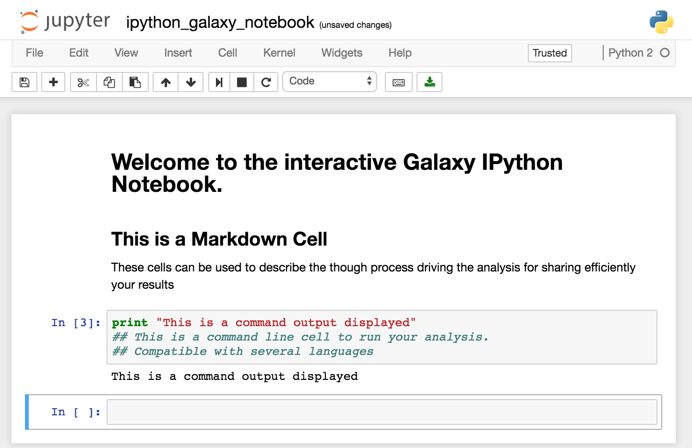
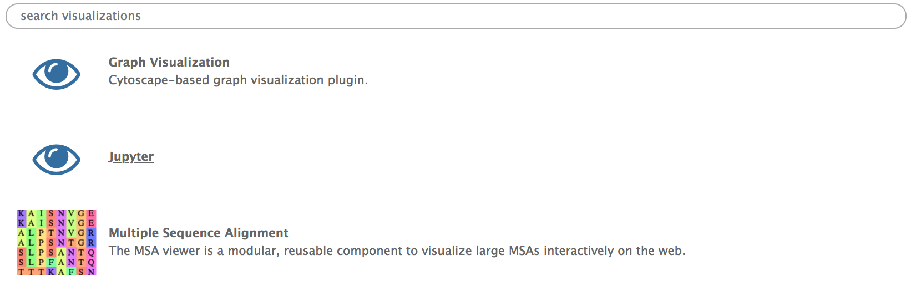
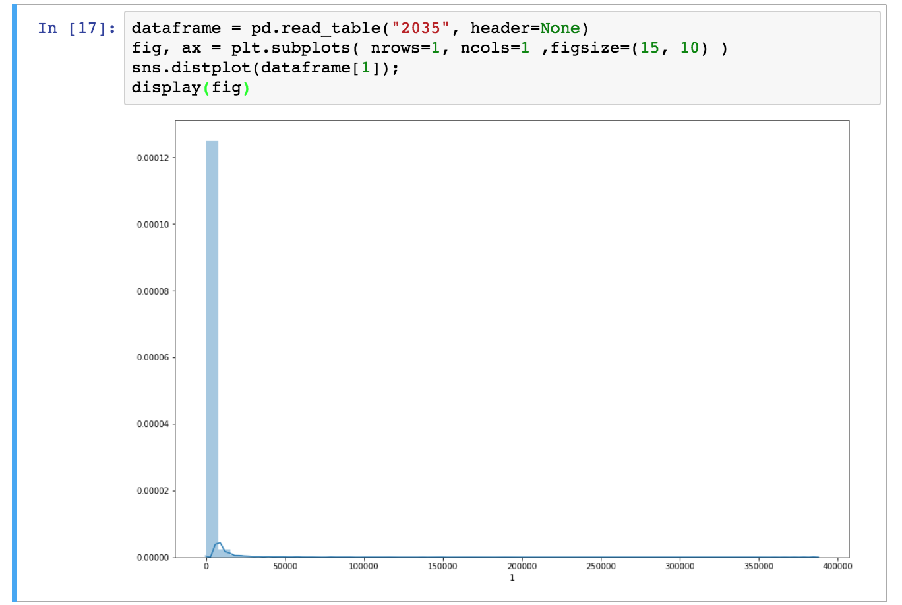
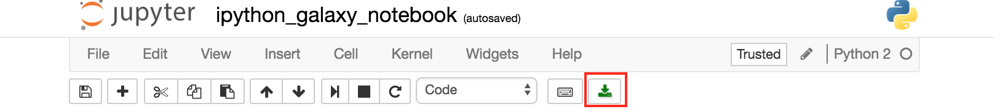

Jupyter: Use Jupyter notebooks in Galaxy
 Delphine Lariviere
Delphine LariviereOverview
question Questionsobjectives Objectives
- How to use a Jupyter Notebook in Galaxy
- Learn about the Jupyter Interactive Environment
time Time estimation: 30 minutes
Supporting Materials
Introduction
In this tutorial we are going to explore the basics of using Jupyter in Galaxy. We will use a RNA seq count file as a test set to get a hang of the Jupyter notebooks.
The file is available in Zenodo or in the Tutorial section of Data Libraries.
Select a file ending with .count and upload it in your history (If you want to know how to upload data in galaxy, see Getting Data into Galaxy tutorial)
Agenda
In this tutorial, we will see :
What is Jupyter ?
Jupyter in an interactive environment that mixes explanatory text, command line and output display for an interactive analysis environment. Its implementation in Galaxy facilitate the performance of additional analysis if there is no tool for it.
These notebooks allow you to replace any in-house script you might need to complete your analysis. You don’t need to move your data out of Galaxy. You can describe each step of your analysis in the markdown cells for an easy understanding of the processes, and save it in your history for sharing and reproducibility. In addition, thanks to Jupyter magic commands, you can use several different languages in a single notebook.

You can find the complete manual for Jupyter commands here.
Use Jupyter notebook in Galaxy
Open a Notebook
The Jupyter notebook can be started from different points. You can either open a Jupyter notebook from a dataset in your history or from the Visualize tab in the upper menu.
hands_on Hands-on: Launching a Jupyter notebook from a dataset or a saved Jupyter notebook
If you only need one dataset from your history to perform you analysis or want to open a Jupyter notebook that you previously saved in your history, you can launch a Jupyter from a single dataset.
- Expand the dataset in you history by clicking on its name.
- Click on the visualization icon galaxy-barchart of the dataset
[...].count.- Select the Jupyter visualization in the list. 
hands_on Hands-on: Lauching a Jupyter notebook from the Visualize tab
- Click on the Visualize tab on the upper menu and select
Interactive Environments- To open a notebook, set the parameters as follows :
- “GIE” :
Jupyter- “Image” :
quay.io/bgruening/docker-jupyter-notebook:17.09- “Datasets” : The datasets you want to work on, here your
[...].countfile. If the first dataset you select is a notebook from you history, it will be opened instead of a new notebook.- Click Launch
Install Libraries in Jupyter
You can install tools and libraries in Jupyter through conda and pip. In this tutorial we are going to use two libraries, pandas and seaborn respectively allowing to manipulate data as Dataframe and to create graphs.
hands_on Hands-on: Install from a Conda recipe
- Click on a cell of your notebook to edit it (verify that it is defined as a
Codecell)- Enter the following lines :
!conda install -y pandasand!conda install -y seaborn
- The
!indicate you are typing a bash command line (alternatively you can use%%bashat the beginning of your cell )- The
-yoption allows the installation without asking for confirmation (The confirmation is not managed well by notebooks)shift+returnto run the cell or click on the run cell button.
hands_on Hands-on: Import Python libraries
- Click on a cell of your notebook to edit it (verify that it is defined as a
Codecell)- Enter the following lines :
import pandas as pd,import seaborn as sns,from IPython.display import display, andimport matplotlib.pyplot as plt.shift+returnto run the cell or click on the run cell button.
Graph Display in Jupyter
In this tutorial we are going to simply plot a distribution graph of our data.
hands_on Hands-on: Draw a distribution plot
- Open the dataset as a pandas Dataframe with the function
dataframe = pd.read_table("[file_number]", header=None)
- The files are referenced in Jupyter by their number in the history.
- Create your figure with the command
fig, ax = plt.subplots( nrows=1, ncols=1 ,figsize=(15, 10) )
nrows=1, ncols=1means you will have one plot in your figure (one row and one column)figsizeparameter determine the size of the figure- Draw the distribution plot of the second column of our dataset with the command
sns.distplot(dataframe[1]);- Show the figure in the Jupyter notebook with
display(fig)
Import / export Data
In addition of starting a Jupyter notebook with datasets included at the beginning , you can import them later using the get(12) command, with the number of your dataset in the history (If you are working on a collection, unhide datasets to see their numbers).
If you want to save a file you generated in your notebook, use the put("file_name") command. That is what we are going to do with our distribution plot.
hands_on Hands-on: Save an Jupyter generated image into a Galaxy History
- Create an image file with the figure you just draw with the command
fig.savefig('distplot.png')- Export your image into your history with the command
put('distplot.png')
Save the Notebook in your history
Once you are done with you analysis or anytime during the editing process, you can save the notebook into your history by clicking on the Save icon.

This will create a new notebook .pynb file in your history every time you click on this icon. You can later re-open it to continue to use it as described in the open a notebook section
Conclusion
trophy You have just performed your first analysis in Jupyter notebook integrated environment in Galaxy. You generated an distribution plot that you saved in your history along with the notebook to generate it.
keypoints Key points
- Start Jupyter from the Visualize tab or from a dataset
- Install Libraries with pip or Conda
- Use get() to import datasets from your history to the notebook
- Use put() to export datasets from the notebook to your history
- Save your notebook into your history
congratulations Congratulations on successfully completing this tutorial!
feedback Give us even more feedback on this content!
To give us more detailed feedback about these materials, please take a moment to fill in the extended Feedback Form.